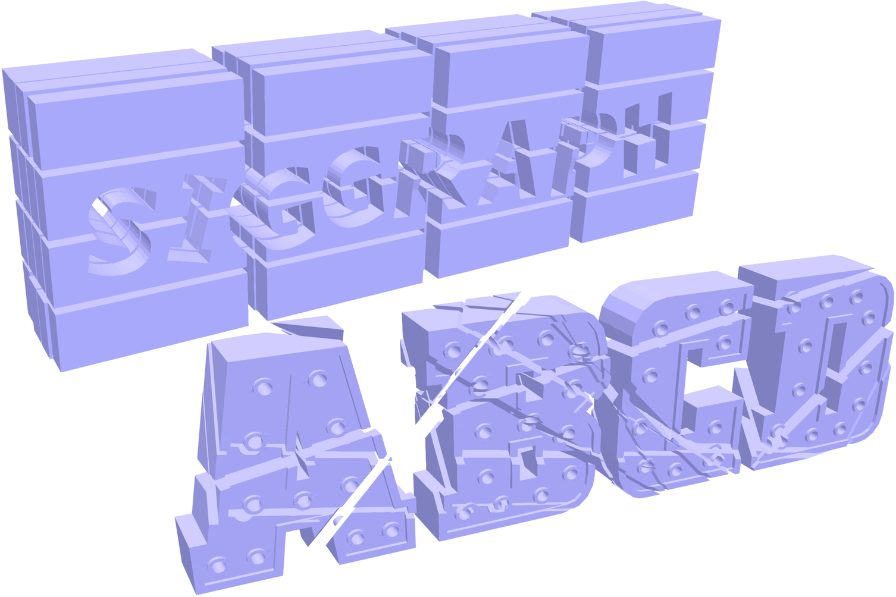
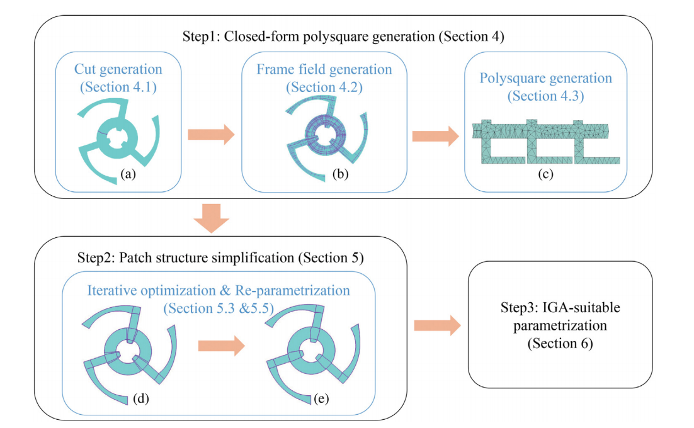
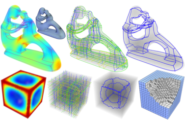
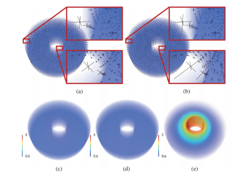
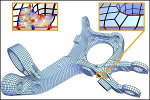
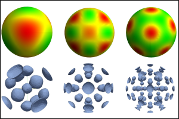
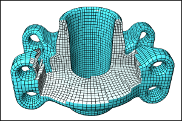
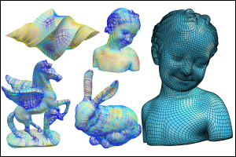

Xianzhong Fang
Lecturer
Ningbo University
Email: fangxianzhong [at] nbu [dot] edu [dot] cn , xzfangcs [at] 163 [dot] com
|  |
TopoCut: Fast and Robust Planar Cutting of Arbitrary Domains ACM Transactions on Graphics, SIGGRAPH 2022 |
|  |
IGA-Suitable Planar Parameterization with Patch Structure Simplification of Closed-form Polysquare Computer Methods in Applied Mechanics and Engineering, 2022 |
|  |
Metric-Driven 3D Frame Field Generation IEEE Transactions on Visualization and Computer Graphics, 2021 (Early Access, online) |
|  |
Controllable Curl-Correction of 3D Frame Fields SCIENTIA SINICA Informationis, 2021 |
|  |
Quadrangulation through Morse-Parameterization Hybridization ACM Transactions on Graphics, SIGGRAPH 2018 |
|  |
Harmonic Functions for Rotational Symmetry Vector Fields Computer Graphics Forum (Proc. PG 2016) |
|  |
All-Hex Meshing using Closed-Form Induced Polycube ACM Transactions on Graphics, SIGGRAPH 2016 |
|  |
Frame Field Generation through Metric Customization ACM Transactions on Graphics, SIGGRAPH 2015 |